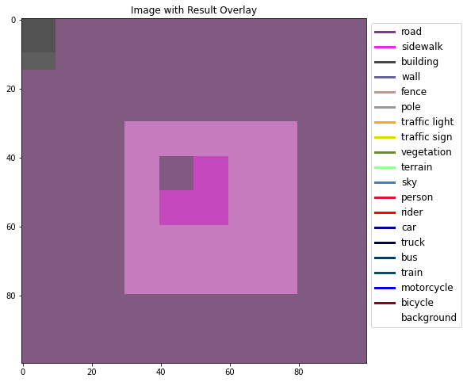
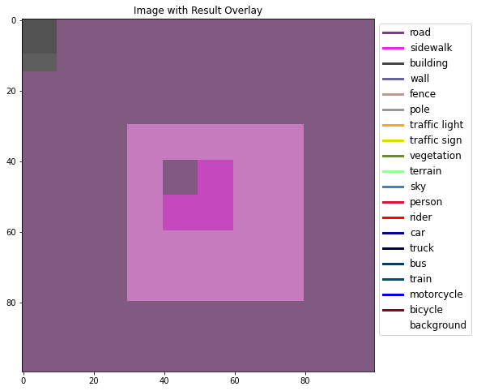

Notebook Utils¶
This notebook contains helper functions and classes for use with
OpenVINO Notebooks. The code is synchronized with the
notebook_utils.py file in the same directory as this notebook.
There are five categories:
Each category contains a test cell that also shows how to use the functions in the section.
import os
import shutil
import socket
import threading
import time
import urllib
import urllib.parse
import urllib.request
from os import PathLike
from pathlib import Path
from typing import Callable, List, NamedTuple, Optional, Tuple
import cv2
import matplotlib
import matplotlib.pyplot as plt
import numpy as np
import openvino.inference_engine
from async_pipeline import AsyncPipeline
from IPython.display import HTML, Image, Markdown, clear_output, display
from matplotlib.lines import Line2D
from models import model
from openvino.inference_engine import IECore
from tqdm.notebook import tqdm_notebook
Files¶
Load an image, download a file, download an IR model, and create a progress bar to show download progress.
def load_image(path: str) -> np.ndarray:
"""
Loads an image from `path` and returns it as BGR numpy array. `path`
should point to an image file, either a local filename or a url. The image is
not stored to the filesystem. Use the `download_file` function to download and
store an image.
:param path: Local path name or URL to image.
:return: image as BGR numpy array
"""
if path.startswith("http"):
# Set User-Agent to Mozilla because some websites block
# requests with User-Agent Python
request = urllib.request.Request(path, headers={"User-Agent": "Mozilla/5.0"})
response = urllib.request.urlopen(request)
array = np.asarray(bytearray(response.read()), dtype="uint8")
image = cv2.imdecode(array, -1) # Loads the image as BGR
else:
image = cv2.imread(path)
return image
class DownloadProgressBar(tqdm_notebook):
"""
TQDM Progress bar for downloading files with urllib.request.urlretrieve
"""
def update_to(self, block_num: int, block_size: int, total_size: int):
downloaded = block_num * block_size
if downloaded <= total_size:
self.update(downloaded - self.n)
def download_file(
url: PathLike,
filename: PathLike = None,
directory: PathLike = None,
show_progress: bool = True,
silent: bool = False,
timeout: int = 10,
) -> str:
"""
Download a file from a url and save it to the local filesystem. The file is saved to the
current directory by default, or to `directory` if specified. If a filename is not given,
the filename of the URL will be used.
:param url: URL that points to the file to download
:param filename: Name of the local file to save. Should point to the name of the file only,
not the full path. If None the filename from the url will be used
:param directory: Directory to save the file to. Will be created if it doesn't exist
If None the file will be saved to the current working directory
:param show_progress: If True, show an TQDM ProgressBar
:param silent: If True, do not print a message if the file already exists
:param timeout: Number of seconds before cancelling the connection attempt
:return: path to downloaded file
"""
try:
opener = urllib.request.build_opener()
opener.addheaders = [("User-agent", "Mozilla/5.0")]
urllib.request.install_opener(opener)
urlobject = urllib.request.urlopen(url, timeout=timeout)
if filename is None:
filename = urlobject.info().get_filename() or Path(urllib.parse.urlparse(url).path).name
except urllib.error.HTTPError as e:
raise Exception(f"File downloading failed with error: {e.code} {e.msg}") from None
except urllib.error.URLError as error:
if isinstance(error.reason, socket.timeout):
raise Exception(
"Connection timed out. If you access the internet through a proxy server, please "
"make sure the proxy is set in the shell from where you launched Jupyter. If your "
"internet connection is slow, you can call `download_file(url, timeout=30)` to "
"wait for 30 seconds before raising this error."
) from None
else:
raise
filename = Path(filename)
if len(filename.parts) > 1:
raise ValueError(
"`filename` should refer to the name of the file, excluding the directory. "
"Use the `directory` parameter to specify a target directory for the downloaded file."
)
# create the directory if it does not exist, and add the directory to the filename
if directory is not None:
directory = Path(directory)
directory.mkdir(parents=True, exist_ok=True)
filename = directory / Path(filename)
# download the file if it does not exist, or if it exists with an incorrect file size
urlobject_size = int(urlobject.info().get("Content-Length", 0))
if not filename.exists() or (os.stat(filename).st_size != urlobject_size):
progress_callback = DownloadProgressBar(
total=urlobject_size,
unit="B",
unit_scale=True,
unit_divisor=1024,
desc=str(filename),
disable=not show_progress,
)
urllib.request.urlretrieve(url, filename, reporthook=progress_callback.update_to)
if os.stat(filename).st_size >= urlobject_size:
progress_callback.update(urlobject_size - progress_callback.n)
progress_callback.refresh()
else:
if not silent:
print(f"'{filename}' already exists.")
return filename.resolve()
def download_ir_model(model_xml_url: str, destination_folder: PathLike = None) -> PathLike:
"""
Download IR model from `model_xml_url`. Downloads model xml and bin file; the weights file is
assumed to exist at the same location and name as model_xml_url with a ".bin" extension.
:param model_xml_url: URL to model xml file to download
:param destination_folder: Directory where downloaded model xml and bin are saved. If None, model
files are saved to the current directory
:return: path to downloaded xml model file
"""
model_bin_url = model_xml_url[:-4] + ".bin"
model_xml_path = download_file(model_xml_url, directory=destination_folder, show_progress=False)
download_file(model_bin_url, directory=destination_folder)
return model_xml_path
Test File Functions¶
model_url = "https://github.com/openvinotoolkit/openvino_notebooks/raw/main/notebooks/002-openvino-api/model/segmentation.xml"
download_ir_model(model_url, "model")
assert os.path.exists("model/segmentation.xml")
assert os.path.exists("model/segmentation.bin")
model/segmentation.bin: 0%| | 0.00/1.09M [00:00<?, ?B/s]
url = "https://github.com/intel-iot-devkit/safety-gear-detector-python/raw/master/resources/Safety_Full_Hat_and_Vest.mp4"
if os.path.exists(os.path.basename(url)):
os.remove(os.path.basename(url))
video_file = download_file(url)
print(video_file)
assert Path(video_file).exists()
Safety_Full_Hat_and_Vest.mp4: 0%| | 0.00/26.3M [00:00<?, ?B/s]
/home/runner/work/openvino_notebooks/openvino_notebooks/notebooks/utils/Safety_Full_Hat_and_Vest.mp4
url = "https://raw.githubusercontent.com/openvinotoolkit/openvino_notebooks/main/README.md"
filename = "openvino_notebooks_readme.md"
if os.path.exists(filename):
os.remove(filename)
readme_file = download_file(url, filename=filename)
print(readme_file)
assert Path(readme_file).exists()
openvino_notebooks_readme.md: 0%| | 0.00/33.8k [00:00<?, ?B/s]
/home/runner/work/openvino_notebooks/openvino_notebooks/notebooks/utils/openvino_notebooks_readme.md
url = "https://raw.githubusercontent.com/openvinotoolkit/openvino_notebooks/main/README.md"
filename = "openvino_notebooks_readme.md"
directory = "temp"
video_file = download_file(
url, filename=filename, directory=directory, show_progress=False, silent=True
)
print(readme_file)
assert Path(readme_file).exists()
shutil.rmtree("temp")
/home/runner/work/openvino_notebooks/openvino_notebooks/notebooks/utils/openvino_notebooks_readme.md
Images¶
Convert Pixel Data¶
Normalize image pixel values between 0 and 1, and convert images to RGB and BGR.
def normalize_minmax(data):
"""
Normalizes the values in `data` between 0 and 1
"""
if data.max() == data.min():
raise ValueError(
"Normalization is not possible because all elements of"
f"`data` have the same value: {data.max()}."
)
return (data - data.min()) / (data.max() - data.min())
def to_rgb(image_data: np.ndarray) -> np.ndarray:
"""
Convert image_data from BGR to RGB
"""
return cv2.cvtColor(image_data, cv2.COLOR_BGR2RGB)
def to_bgr(image_data: np.ndarray) -> np.ndarray:
"""
Convert image_data from RGB to BGR
"""
return cv2.cvtColor(image_data, cv2.COLOR_RGB2BGR)
Test Data Conversion Functions¶
test_array = np.random.randint(0, 255, (100, 100, 3))
normalized_array = normalize_minmax(test_array)
assert normalized_array.min() == 0
assert normalized_array.max() == 1
bgr_array = np.ones((100, 100, 3), dtype=np.uint8)
bgr_array[:, :, 0] = 0
bgr_array[:, :, 1] = 1
bgr_array[:, :, 2] = 2
rgb_array = to_rgb(bgr_array)
assert np.all(bgr_array[:, :, 0] == rgb_array[:, :, 2])
bgr_array_converted = to_bgr(rgb_array)
assert np.all(bgr_array_converted == bgr_array)
Videos¶
Video Player¶
Custom video player to fulfill FPS requirements. You can set target FPS and output size, flip the video horizontally or skip first N frames.
class VideoPlayer:
"""
Custom video player to fulfill FPS requirements. You can set target FPS and output size,
flip the video horizontally or skip first N frames.
:param source: Video source. It could be either camera device or video file.
:param size: Output frame size.
:param flip: Flip source horizontally.
:param fps: Target FPS.
:param skip_first_frames: Skip first N frames.
"""
def __init__(self, source, size=None, flip=False, fps=None, skip_first_frames=0):
self.__cap = cv2.VideoCapture(source)
if not self.__cap.isOpened():
raise RuntimeError(
f"Cannot open {'camera' if isinstance(source, int) else ''} {source}"
)
# skip first N frames
self.__cap.set(cv2.CAP_PROP_POS_FRAMES, skip_first_frames)
# fps of input file
self.__input_fps = self.__cap.get(cv2.CAP_PROP_FPS)
if self.__input_fps <= 0:
self.__input_fps = 60
# target fps given by user
self.__output_fps = fps if fps is not None else self.__input_fps
self.__flip = flip
self.__size = None
self.__interpolation = None
if size is not None:
self.__size = size
# AREA better for shrinking, LINEAR better for enlarging
self.__interpolation = (
cv2.INTER_AREA
if size[0] < self.__cap.get(cv2.CAP_PROP_FRAME_WIDTH)
else cv2.INTER_LINEAR
)
# first frame
_, self.__frame = self.__cap.read()
self.__lock = threading.Lock()
self.__thread = None
self.__stop = False
"""
Start playing.
"""
def start(self):
self.__stop = False
self.__thread = threading.Thread(target=self.__run, daemon=True)
self.__thread.start()
"""
Stop playing and release resources.
"""
def stop(self):
self.__stop = True
if self.__thread is not None:
self.__thread.join()
self.__cap.release()
def __run(self):
prev_time = 0
while not self.__stop:
t1 = time.time()
ret, frame = self.__cap.read()
if not ret:
break
# fulfill target fps
if 1 / self.__output_fps < time.time() - prev_time:
prev_time = time.time()
# replace by current frame
with self.__lock:
self.__frame = frame
t2 = time.time()
# time to wait [s] to fulfill input fps
wait_time = 1 / self.__input_fps - (t2 - t1)
# wait until
time.sleep(max(0, wait_time))
self.__frame = None
"""
Get current frame.
"""
def next(self):
with self.__lock:
if self.__frame is None:
return None
# need to copy frame, because can be cached and reused if fps is low
frame = self.__frame.copy()
if self.__size is not None:
frame = cv2.resize(frame, self.__size, interpolation=self.__interpolation)
if self.__flip:
frame = cv2.flip(frame, 1)
return frame
Test Video Player¶
video = "../201-vision-monodepth/data/Coco Walking in Berkeley.mp4"
player = VideoPlayer(video, fps=15, skip_first_frames=10)
player.start()
for i in range(50):
frame = player.next()
_, encoded_img = cv2.imencode(".jpg", frame, params=[cv2.IMWRITE_JPEG_QUALITY, 90])
img = Image(data=encoded_img)
clear_output(wait=True)
display(img)
player.stop()
print("Finished")
Finished
Visualization¶
Segmentation¶
Define a SegmentationMap NamedTuple that keeps the labels and colormap for a segmentation project/dataset. Create CityScapesSegmentation and BinarySegmentation SegmentationMaps. Create a function to convert a segmentation map to an RGB image with a colormap, and to show the segmentation result as an overlay over the original image.
class Label(NamedTuple):
index: int
color: Tuple
name: Optional[str] = None
class SegmentationMap(NamedTuple):
labels: List
def get_colormap(self):
return np.array([label.color for label in self.labels])
def get_labels(self):
labelnames = [label.name for label in self.labels]
if any(labelnames):
return labelnames
else:
return None
cityscape_labels = [
Label(index=0, color=(128, 64, 128), name="road"),
Label(index=1, color=(244, 35, 232), name="sidewalk"),
Label(index=2, color=(70, 70, 70), name="building"),
Label(index=3, color=(102, 102, 156), name="wall"),
Label(index=4, color=(190, 153, 153), name="fence"),
Label(index=5, color=(153, 153, 153), name="pole"),
Label(index=6, color=(250, 170, 30), name="traffic light"),
Label(index=7, color=(220, 220, 0), name="traffic sign"),
Label(index=8, color=(107, 142, 35), name="vegetation"),
Label(index=9, color=(152, 251, 152), name="terrain"),
Label(index=10, color=(70, 130, 180), name="sky"),
Label(index=11, color=(220, 20, 60), name="person"),
Label(index=12, color=(255, 0, 0), name="rider"),
Label(index=13, color=(0, 0, 142), name="car"),
Label(index=14, color=(0, 0, 70), name="truck"),
Label(index=15, color=(0, 60, 100), name="bus"),
Label(index=16, color=(0, 80, 100), name="train"),
Label(index=17, color=(0, 0, 230), name="motorcycle"),
Label(index=18, color=(119, 11, 32), name="bicycle"),
Label(index=19, color=(255, 255, 255), name="background"),
]
CityScapesSegmentation = SegmentationMap(cityscape_labels)
binary_labels = [
Label(index=0, color=(255, 255, 255), name="background"),
Label(index=1, color=(0, 0, 0), name="foreground"),
]
BinarySegmentation = SegmentationMap(binary_labels)
def segmentation_map_to_image(
result: np.ndarray, colormap: np.ndarray, remove_holes: bool = False
) -> np.ndarray:
"""
Convert network result of floating point numbers to an RGB image with
integer values from 0-255 by applying a colormap.
:param result: A single network result after converting to pixel values in H,W or 1,H,W shape.
:param colormap: A numpy array of shape (num_classes, 3) with an RGB value per class.
:param remove_holes: If True, remove holes in the segmentation result.
:return: An RGB image where each pixel is an int8 value according to colormap.
"""
if len(result.shape) != 2 and result.shape[0] != 1:
raise ValueError(
f"Expected result with shape (H,W) or (1,H,W), got result with shape {result.shape}"
)
if len(np.unique(result)) > colormap.shape[0]:
raise ValueError(
f"Expected max {colormap[0]} classes in result, got {len(np.unique(result))} "
"different output values. Please make sure to convert the network output to "
"pixel values before calling this function."
)
elif result.shape[0] == 1:
result = result.squeeze(0)
result = result.astype(np.uint8)
contour_mode = cv2.RETR_EXTERNAL if remove_holes else cv2.RETR_TREE
mask = np.zeros((result.shape[0], result.shape[1], 3), dtype=np.uint8)
for label_index, color in enumerate(colormap):
label_index_map = result == label_index
label_index_map = label_index_map.astype(np.uint8) * 255
contours, hierarchies = cv2.findContours(
label_index_map, contour_mode, cv2.CHAIN_APPROX_SIMPLE
)
cv2.drawContours(
mask,
contours,
contourIdx=-1,
color=color.tolist(),
thickness=cv2.FILLED,
)
return mask
def segmentation_map_to_overlay(image, result, alpha, colormap, remove_holes=False) -> np.ndarray:
"""
Returns a new image where a segmentation mask (created with colormap) is overlayed on
the source image.
:param image: Source image.
:param result: A single network result after converting to pixel values in H,W or 1,H,W shape.
:param alpha: Alpha transparency value for the overlay image.
:param colormap: A numpy array of shape (num_classes, 3) with an RGB value per class.
:param remove_holes: If True, remove holes in the segmentation result.
:return: An RGP image with segmentation mask overlayed on the source image.
"""
if len(image.shape) == 2:
image = np.repeat(np.expand_dims(image, -1), 3, 2)
mask = segmentation_map_to_image(result, colormap, remove_holes)
image_height, image_width = image.shape[:2]
mask = cv2.resize(src=mask, dsize=(image_width, image_height))
return cv2.addWeighted(mask, alpha, image, 1 - alpha, 0)
Network Results¶
Show network result image, optionally together with the source image and a legend with labels.
def viz_result_image(
result_image: np.ndarray,
source_image: np.ndarray = None,
source_title: str = None,
result_title: str = None,
labels: List[Label] = None,
resize: bool = False,
bgr_to_rgb: bool = False,
hide_axes: bool = False,
) -> matplotlib.figure.Figure:
"""
Show result image, optionally together with source images, and a legend with labels.
:param result_image: Numpy array of RGB result image.
:param source_image: Numpy array of source image. If provided this image will be shown
next to the result image. source_image is expected to be in RGB format.
Set bgr_to_rgb to True if source_image is in BGR format.
:param source_title: Title to display for the source image.
:param result_title: Title to display for the result image.
:param labels: List of labels. If provided, a legend will be shown with the given labels.
:param resize: If true, resize the result image to the same shape as the source image.
:param bgr_to_rgb: If true, convert the source image from BGR to RGB. Use this option if
source_image is a BGR image.
:param hide_axes: If true, do not show matplotlib axes.
:return: Matplotlib figure with result image
"""
if bgr_to_rgb:
source_image = to_rgb(source_image)
if resize:
result_image = cv2.resize(result_image, (source_image.shape[1], source_image.shape[0]))
num_images = 1 if source_image is None else 2
fig, ax = plt.subplots(1, num_images, figsize=(16, 8), squeeze=False)
if source_image is not None:
ax[0, 0].imshow(source_image)
ax[0, 0].set_title(source_title)
ax[0, num_images - 1].imshow(result_image)
ax[0, num_images - 1].set_title(result_title)
if hide_axes:
for a in ax.ravel():
a.axis("off")
if labels:
colors = labels.get_colormap()
lines = [
Line2D(
[0],
[0],
color=[item / 255 for item in c.tolist()],
linewidth=3,
linestyle="-",
)
for c in colors
]
plt.legend(
lines,
labels.get_labels(),
bbox_to_anchor=(1, 1),
loc="upper left",
prop={"size": 12},
)
plt.close(fig)
return fig
Test Visualization Functions¶
testimage = np.zeros((100, 100, 3), dtype=np.uint8)
testimage[30:80, 30:80, :] = [0, 255, 0]
testimage[0:10, 0:10, :] = 100
testimage[40:60, 40:60, :] = 128
testimage[testimage == 0] = 128
testmask1 = np.zeros((testimage.shape[:2]))
testmask1[30:80, 30:80] = 1
testmask1[40:50, 40:50] = 0
testmask1[0:15, 0:10] = 2
result_image_overlay = segmentation_map_to_overlay(
image=testimage,
result=testmask1,
alpha=0.6,
colormap=np.array([[0, 0, 0], [255, 0, 0], [255, 255, 0]]),
)
result_image = segmentation_map_to_image(testmask1, CityScapesSegmentation.get_colormap())
result_image_no_holes = segmentation_map_to_image(
testmask1, CityScapesSegmentation.get_colormap(), remove_holes=True
)
resized_result_image = cv2.resize(result_image, (50, 50))
overlay_result_image = segmentation_map_to_overlay(
testimage, testmask1, 0.6, CityScapesSegmentation.get_colormap(), remove_holes=False
)
fig1 = viz_result_image(result_image, testimage)
fig2 = viz_result_image(result_image_no_holes, testimage, labels=CityScapesSegmentation)
fig3 = viz_result_image(
resized_result_image,
testimage,
source_title="Source Image",
result_title="Resized Result Image",
resize=True,
)
fig4 = viz_result_image(
overlay_result_image,
labels=CityScapesSegmentation,
result_title="Image with Result Overlay",
)
display(fig1, fig2, fig3, fig4)
 

Live Inference¶
def showarray(frame: np.ndarray, display_handle=None):
"""
Display array `frame`. Replace information at `display_handle` with `frame`
encoded as jpeg image. `frame` is expected to have data in BGR order.
Create a display_handle with: `display_handle = display(display_id=True)`
"""
_, frame = cv2.imencode(ext=".jpeg", img=frame)
if display_handle is None:
display_handle = display(Image(data=frame.tobytes()), display_id=True)
else:
display_handle.update(Image(data=frame.tobytes()))
return display_handle
def show_live_inference(
ie, image_paths: List, model: model.Model, device: str, reader: Optional[Callable] = None
):
"""
Do inference of images listed in `image_paths` on `model` on the given `device` and show
the results in real time in a Jupyter Notebook
:param image_paths: List of image filenames to load
:param model: Model instance for inference
:param device: Name of device to perform inference on. For example: "CPU"
:param reader: Image reader. Should return a numpy array with image data.
If None, cv2.imread will be used, with the cv2.IMREAD_UNCHANGED flag
"""
display_handle = None
next_frame_id = 0
next_frame_id_to_show = 0
input_layer = next(iter(model.net.input_info))
# Create asynchronous pipeline and print time it takes to load the model
load_start_time = time.perf_counter()
pipeline = AsyncPipeline(
ie=ie, model=model, plugin_config={}, device=device, max_num_requests=0
)
load_end_time = time.perf_counter()
# Perform asynchronous inference
start_time = time.perf_counter()
while next_frame_id < len(image_paths) - 1:
results = pipeline.get_result(next_frame_id_to_show)
if results:
# Show next result from async pipeline
result, meta = results
display_handle = showarray(result, display_handle)
next_frame_id_to_show += 1
if pipeline.is_ready():
# Submit new image to async pipeline
image_path = image_paths[next_frame_id]
if reader is None:
image = cv2.imread(filename=str(image_path), flags=cv2.IMREAD_UNCHANGED)
else:
image = reader(str(image_path))
pipeline.submit_data(
inputs={input_layer: image}, id=next_frame_id, meta={"frame": image}
)
del image
next_frame_id += 1
else:
# If the pipeline is not ready yet and there are no results: wait
pipeline.await_any()
pipeline.await_all()
# Show all frames that are in the pipeline after all images have been submitted
while pipeline.has_completed_request():
results = pipeline.get_result(next_frame_id_to_show)
if results:
result, meta = results
display_handle = showarray(result, display_handle)
next_frame_id_to_show += 1
end_time = time.perf_counter()
duration = end_time - start_time
fps = len(image_paths) / duration
print(f"Loaded model to {device} in {load_end_time-load_start_time:.2f} seconds.")
print(f"Total time for {next_frame_id} frames: {duration:.2f} seconds, fps:{fps:.2f}")
del pipeline.exec_net
del pipeline
Test Live Inference¶
# Test binary segmentation
from models.custom_segmentation import SegmentationModel
image_paths = sorted(list(Path("../111-detection-quantization/data").glob("*.jpg")))
ie = IECore()
segmentation_model = SegmentationModel(
ie,
Path("model/segmentation.xml"),
sigmoid=False,
colormap=np.array([[0, 0, 0], [0, 0, 255]]),
rgb=True,
rotate_and_flip=False,
)
show_live_inference(
ie=ie,
image_paths=image_paths,
model=segmentation_model,
device="CPU",
reader=lambda x: cv2.cvtColor(cv2.imread(x), cv2.COLOR_BGR2RGB),
)
Loaded model to CPU in 0.90 seconds.
Total time for 9 frames: 2.97 seconds, fps:3.37
# Test multiclass segmentation with different input shape
# This requires running the 102 notebook first, to generate the Fastseg model
fastseg_path = Path("../102-pytorch-onnx-to-openvino/model/fastseg1024.xml")
image_path = "../102-pytorch-onnx-to-openvino/data/street.jpg"
if fastseg_path.exists():
image_paths = [
image_path,
] * 5
ie = IECore()
CityScapesSegmentation = SegmentationMap(cityscape_labels)
segmentation_model = SegmentationModel(
ie,
fastseg_path,
sigmoid=False,
argmax=True,
colormap=CityScapesSegmentation.get_colormap(),
rgb=True,
)
show_live_inference(ie=ie, image_paths=image_paths, model=segmentation_model, device="CPU")
Loaded model to CPU in 0.28 seconds.
Total time for 4 frames: 2.47 seconds, fps:2.02
OpenVINO Tools¶
def benchmark_model(
model_path: PathLike,
device: str = "CPU",
seconds: int = 60,
api: str = "async",
batch: int = 1,
cache_dir: PathLike = "model_cache",
):
"""
Benchmark model `model_path` with `benchmark_app`. Returns the output of `benchmark_app`
without logging info, and information about the device
:param model_path: path to IR model xml file, or ONNX model
:param device: device to benchmark on. For example, "CPU" or "MULTI:CPU,GPU"
:param seconds: number of seconds to run benchmark_app
:param api: API. Possible options: sync or async
:param batch: Batch size
:param cache_dir: Directory that contains model/kernel cache files
"""
ie = IECore()
model_path = Path(model_path)
if ("GPU" in device) and ("GPU" not in ie.available_devices):
raise ValueError(
f"A GPU device is not available. Available devices are: {ie.available_devices}"
)
else:
benchmark_command = f"benchmark_app -m {model_path} -d {device} -t {seconds} -api {api} -b {batch} -cdir {cache_dir}"
display(
Markdown(
f"**Benchmark {model_path.name} with {device} for {seconds} seconds with {api} inference**"
)
)
display(Markdown(f"Benchmark command: `{benchmark_command}`"))
benchmark_output = get_ipython().run_line_magic("sx", "$benchmark_command")
benchmark_result = [
line
for line in benchmark_output
if not (line.startswith(r"[") or line.startswith(" ") or line == "")
]
print("\n".join(benchmark_result))
print()
if "MULTI" in device:
devices = device.replace("MULTI:", "").split(",")
for single_device in devices:
device_name = ie.get_metric(
device_name=single_device, metric_name="FULL_DEVICE_NAME"
)
print(f"{single_device} device: {device_name}")
else:
print(f"Device: {ie.get_metric(device_name=device, metric_name='FULL_DEVICE_NAME')}")
Test OpenVINO Tools¶
ie = IECore()
model_url = "https://github.com/openvinotoolkit/openvino_notebooks/raw/main/notebooks/002-openvino-api/model/segmentation.xml"
model_path = download_ir_model(model_url, "model")
device = "MULTI:CPU,GPU" if "GPU" in ie.available_devices else "CPU"
display(Markdown(device))
benchmark_model(model_path=model_path, device=device, seconds=5)
'model/segmentation.xml' already exists.
'model/segmentation.bin' already exists.
CPU
Benchmark segmentation.xml with CPU for 5 seconds with async inference
Benchmark command:
benchmark_app -m /home/runner/work/openvino_notebooks/openvino_notebooks/notebooks/utils/model/segmentation.xml -d CPU -t 5 -api async -b 1 -cdir model_cache
Count: 20 iterations
Duration: 5745.62 ms
Latency:
Throughput: 3.48 FPS
Device: Intel(R) Xeon(R) Platinum 8272CL CPU @ 2.60GHz
Checks and Alerts¶
Create an alert class to show stylized info/error/warning messages and a
check_device function that checks whether a given device is
available.
class NotebookAlert(Exception):
def __init__(self, message: str, alert_class: str):
"""
Show an alert box with the given message.
:param message: The message to display.
:param alert_class: The class for styling the message. Options: info, warning, success, danger.
"""
self.message = message
self.alert_class = alert_class
self.show_message()
def show_message(self):
display(HTML(f"""<div class="alert alert-{self.alert_class}">{self.message}"""))
class DeviceNotFoundAlert(NotebookAlert):
def __init__(self, device: str):
"""
Show a warning message about an unavailable device. This class does not check whether or
not the device is available, use the `check_device` function to check this. `check_device`
also shows the warning if the device is not found.
:param device: The unavailable device.
:return: A formatted alert box with the message that `device` is not available, and a list
of devices that are available.
"""
ie = IECore()
supported_devices = ie.available_devices
self.message = (
f"Running this cell requires a {device} device, "
"which is not available on this system. "
)
self.alert_class = "warning"
if len(supported_devices) == 1:
self.message += f"The following device is available: {ie.available_devices[0]}"
else:
self.message += (
"The following devices are available: " f"{', '.join(ie.available_devices)}"
)
super().__init__(self.message, self.alert_class)
def check_device(device: str) -> bool:
"""
Check if the specified device is available on the system.
:param device: Device to check. e.g. CPU, GPU
:return: True if the device is available, False if not. If the device is not available,
a DeviceNotFoundAlert will be shown.
"""
ie = IECore()
if device not in ie.available_devices:
DeviceNotFoundAlert(device)
return False
else:
return True
def check_openvino_version(version: str) -> bool:
"""
Check if the specified OpenVINO version is installed.
:param version: the OpenVINO version to check. Example: 2021.4
:return: True if the version is installed, False if not. If the version is not installed,
an alert message will be shown.
"""
installed_version = openvino.inference_engine.get_version()
if version not in installed_version:
NotebookAlert(
f"This notebook requires OpenVINO {version}. "
f"The version on your system is: <i>{installed_version}</i>.<br>"
"Please run <span style='font-family:monospace'>pip install --upgrade -r requirements.txt</span> "
"in the openvino_env environment to install this version. "
"See the <a href='https://github.com/openvinotoolkit/openvino_notebooks'>"
"OpenVINO Notebooks README</a> for detailed instructions",
alert_class="danger",
)
return False
else:
return True
Test Alerts¶
NotebookAlert(message="Hello, world!", alert_class="info")
DeviceNotFoundAlert("GPU");
assert check_device("CPU")
if check_device("HELLOWORLD"):
print("Hello World device found.")
check_openvino_version("2022.1");